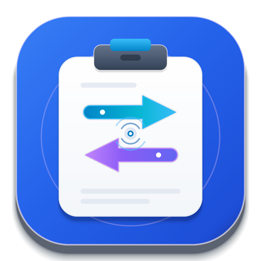

正式版
Windows
让电脑成为跨设备工作的中心。
下载 Windows 版ZIP · 231.4 MBGitHub 备用下载 ↗

ClipRelay 下载应用在电脑与手机之间，自由接力
把刚复制的文字送到另一块屏幕，
在手机上继续操作电脑。让你的工作，顺畅接力。
MY DEVICES
灵感，随时接得住。
LESS SWITCHING. MORE DOING.
从传一段文字，到操作整台电脑。
用一个入口，把设备串起来。
把设备连接起来，
让好想法继续流动。
选择发送目标后，通过快捷键发送选中文字或截图。内容进入对方剪贴板，继续粘贴即可。
在 Android 手机上查看并操作电脑。按应用引导完成授权与配对；外网连接可使用直连或服务器中转。
$ ppilot remote devices --jsonCLI 直接调用 ClipRelay 后台，无需额外配置 MCP。当前 AI 被控接口支持 Windows；浏览器与 Electron 控制需要目标端的 ProfilePilot 连接。
START WITH A CONNECTION.
Windows 下载 ZIP，解压后运行 install.ps1；Android 下载 APK，按系统提示安装。
让应用保持运行，在设备列表中添加目标。首次连接按应用提示核对设备、完成配对与授权。
局域网与外网按对应入口设置选择剪贴板发送目标，试着发送一段文字；或从手机进入远程桌面，继续操作电脑。
关闭窗口后，桌面应用可留在托盘运行YOUR NEXT SCREEN IS READY.
从你的设备开始，下载 ClipRelay。
正式版信息核对于 2026年10月27日
让电脑成为跨设备工作的中心。
下载 Windows 版接收内容，把远程电脑带在身边。
下载 Android 版让 Mac 也加入你的设备协作。
查看开发与安装说明AI 控制与新的服务设备发现入口属于 Windows 0.4.3 待发布功能，当前正式下载版不包含这些新增能力。查看版本更新 ↗
局域网内可以发现并连接设备。应用也提供内置外网连接，按当前版本的配对引导完成设置后，可使用直连或服务器中转。实际可用性与设备状态和网络环境有关。
安装只是第一步：对方需要运行应用、开启相应的被控功能，并完成该版本要求的授权或配对。0.4.3 的服务设备目录会在开启「允许被发现」后展示设备；同时开启「允许被连接」后可接受连接。此公开发现范围是所有使用同一 ClipRelay 服务的人，不仅是好友。该能力尚未包含在官网当前正式下载版中。
不需要。0.4.3 的主要入口是 ProfilePilot CLI，后台随 ClipRelay 应用安装。它可读取浏览器页面结构或 Windows UI Automation 控件，在需要时再使用截图。MCP 是可选入口。当前 AI 被控接口支持 Windows，浏览器与 Electron 操作还需要目标端准备好 ProfilePilot 连接。
在应用的远程访问或授权管理中断开连接、移除设备授权；不希望继续被访问时，关闭相应的被控开关。AI 控制还提供本机停止入口，以及闲置会话到期释放。
Windows 需要先完整解压 ZIP，再在 PowerShell 中运行包内的 install.ps1，按提示完成安装。Android 下载 APK 后按系统提示安装。安装后可使用应用内的版本检查；完整步骤及平台限制请查看仓库说明。下载失败时可尝试各平台卡片中的 GitHub 备用入口。